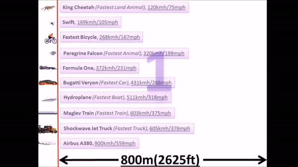

Importanta Transportului
Transportul a fost un pilon fundamental al dezvoltării umane de-a lungul istoriei, iar contribuția sa la evoluția și progresul societății este profundă și incontestabilă.
De-a lungul secolelor, omenirea a căutat modalități de a-și extinde orizonturile, de a-și diversifica resursele și de a-și conecta comunitățile. În acest context, transportul a jucat un rol esențial, furnizând mijloacele necesare pentru a realiza aceste aspirații.
În epocile timpurii, oamenii se baza pe metode primitive de transport, cum ar fi mersul pe jos sau folosirea animalelor pentru a trage vehicule simple.
Totuși, chiar și aceste forme primitive de transport au avut un impact semnificativ asupra societăților antice, facilitând comerțul, schimburile culturale și migrarea popoarelor.
Invenția roții a marcat un punct de cotitură în evoluția transportului uman.
Acest simplu, dar revoluționar, inovator a permis oamenilor să transporte mărfuri și persoane cu mai multă eficiență și viteză.
Apoi, dezvoltarea transportului maritim a deschis noi rute comerciale între continente și a facilitat explorarea și colonizarea noilor teritorii.

In acest gif se prezinta evolutia transportului.Odată cu revoluția industrială, transportul a cunoscut schimbări radicale.
Locomotivele cu aburi și căile ferate au transformat complet modul în care oamenii călătoreau și transportau bunuri, accelerând procesul de urbanizare și industrializare.
Mai târziu, apariția automobilelor și a avioanelor a dus la o nouă eră de mobilitate și accesibilitate, conectând lumea într-un mod fără precedent.
Astăzi, transportul continuă să fie o forță vitală pentru progresul umanității.
De la rețelele de transport globalizate până la explorarea spațiului cosmic, oamenii continuă să caute modalități de a îmbunătăți și de a inova în domeniul transportului.
Importanța sa nu constă doar în facilitarea mobilității fizice, ci și în deschiderea unor noi oportunități economice, sociale și culturale pentru omenire.
În esență, transportul rămâne un element central al experienței umane și un motor esențial al progresului și dezvoltării continue.